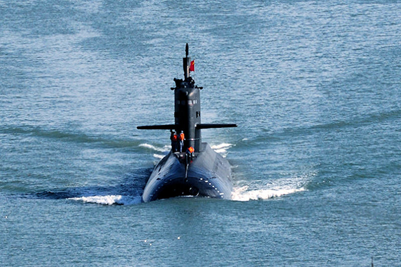
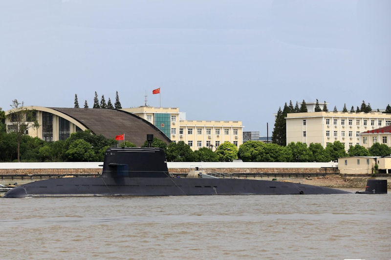
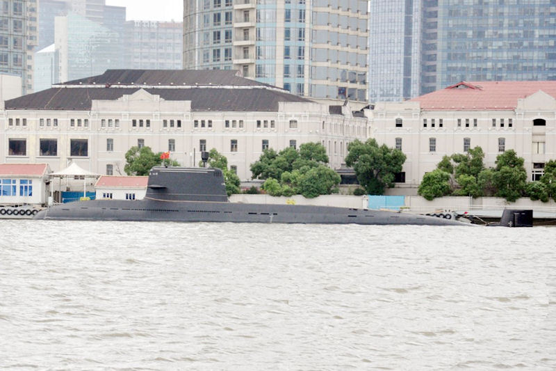
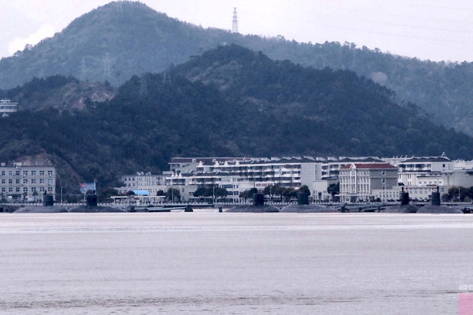
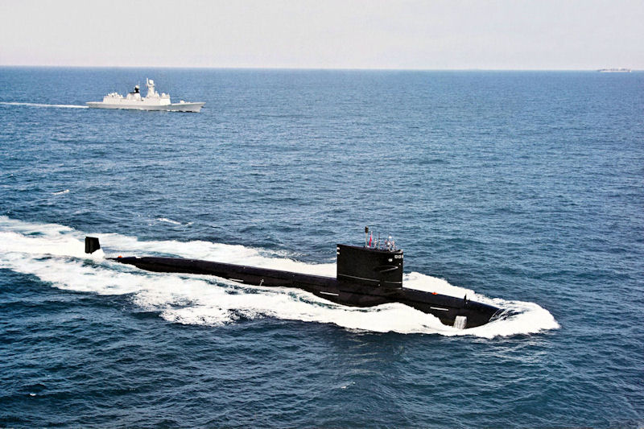
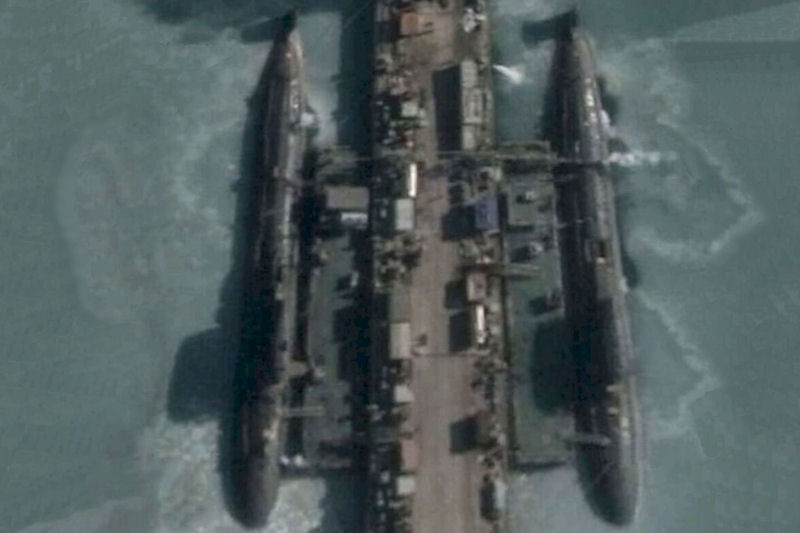
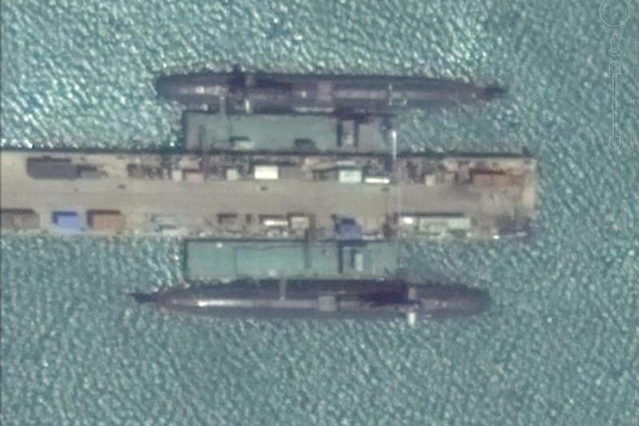
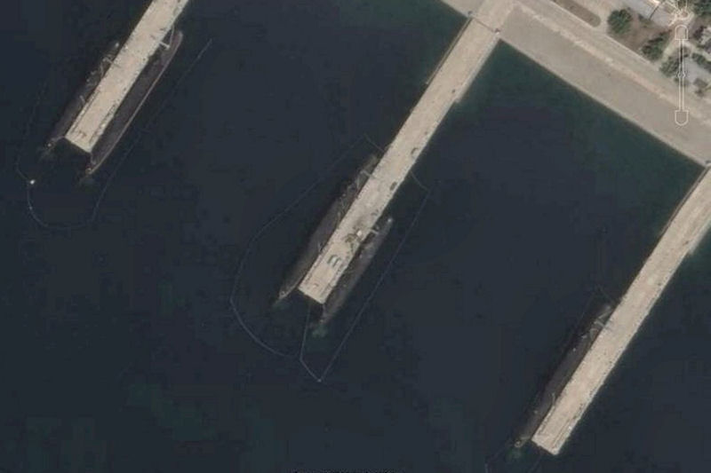
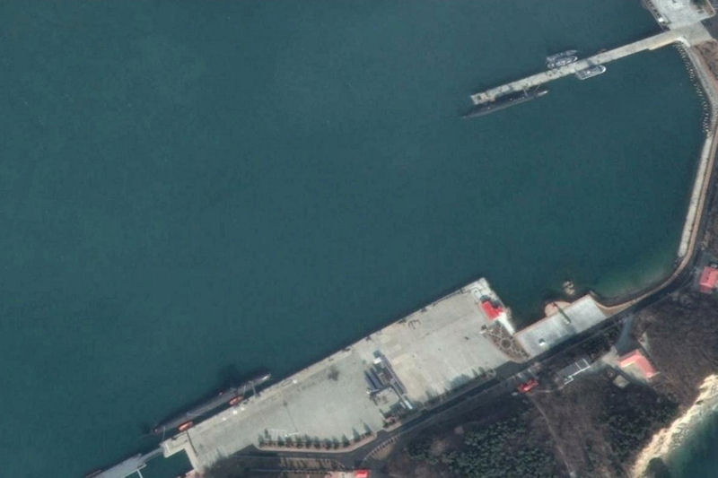

|
2016 Report on the State of the PLAN 
Note: For all photos in the report, refer to This Flickr Album for high resolution images of teach.
5. SUBMARINE DEVELOPMENTS

Yuan Class AIP Diesel Eletctric Submarine: Twelve of the orginal Yuan class were built and it is estimated that another three or more of these new boats have been constructed.     With several old Ming class submarines requiring replacement, and ultimately as the Song class begins to age, the PLAN is going to need more of these newer SSK boats.

Type 093 Nuclear Attack Submarine: Originally, two of Type 093 boats were built and launched in 2003 and 2004. They were bigger and faster than the older Type 091. Apparently, these first two did not meet the PLAN's full requirements or expectations because the build was suspended and it was a long time before those two were put in actual service. It was not until some years later that they started building the Type 093 again and the newer builds were given the Type 093G designation in the West. In 2015 pictures, several of the new boats have surfaced with reports that as many as three of them have been trialed and put in service with the fourth yet to be commissioned. By building four of the new Type 093G boats, it is clear that the PLAN has made some decent progress in their technologies. It has been reported that the "G" boats also have a vertical launch capability. These boats may have reached a quieting level of just below the original US Navy Los Angeles Class submarines, between the Sturgeon class and the LA Class. Production has ceased on these vessels at this point.     Once the fourth Type 093G boat is put in service, the PLAN will have eight operating nuclear attack submarines. Two remaining old Type 091, the first two Type 093, and the four Type 093G boats. It has been reported for some time that the PLAN was designing the next generation Chinese nuclear attack submarine, the Type 095 boats. There are indications that one of them may already have been built, though no pictures or physical evidence of it has been seen. We will report on any new information in next year's report.
Go to 6. Chinese 5th Generation Stealth Development of the 2016 PLAN Report RETURN TO MAIN PAGE OF THE 2016 PLAN REPORT
Other links of Interest:
World-Wide Aircraft Carriers
|